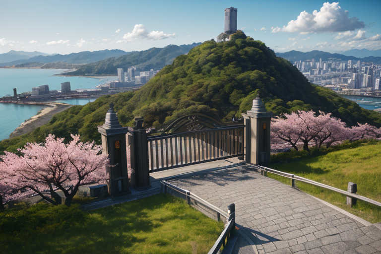
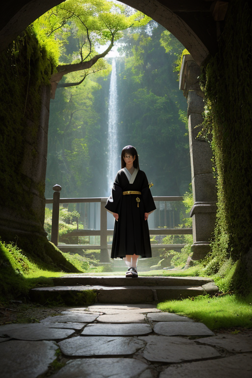
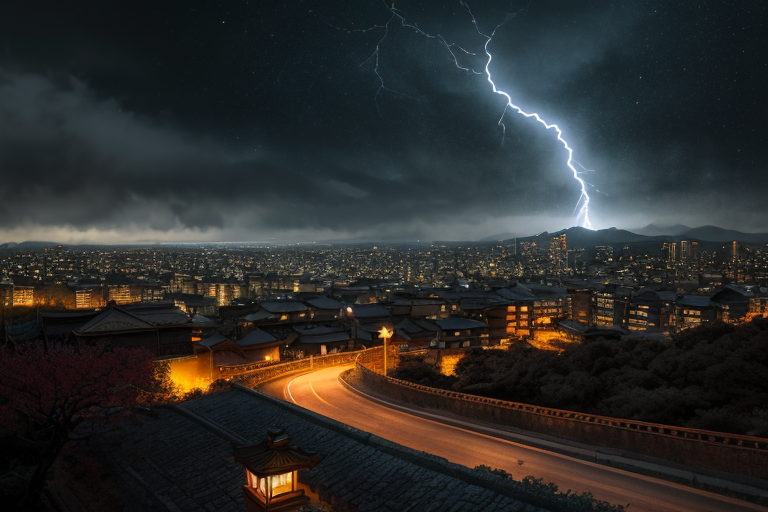
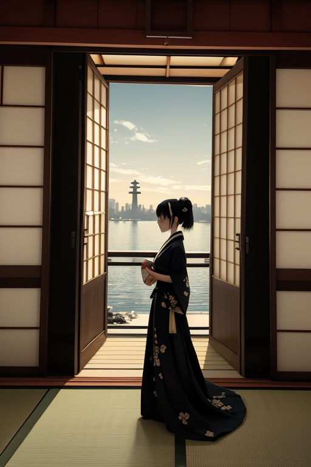
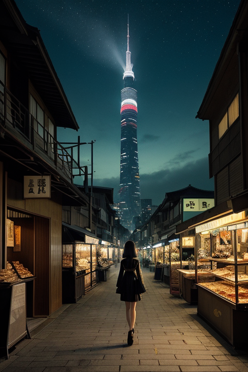

第一章 現実の福岡
あなたはまだ気づいていない。この土地にも、王がいることを。
太宰府天満宮の参道は、平日の午後でも人で埋まっていた。梅の季節は過ぎ、新緑が境内を覆い始めていた。ここはかつて、遠の朝廷と呼ばれた古代政庁の地である。大陸からの使者を迎え、時に脅威に備え、この地で歴史の岐路が幾度も刻まれた。今、観光客たちはスマートフォンを向け、お守りを選び、歴史の重みよりも「インスタ映え」を求めている。そのざわめきの奥で、地層は静かに歪みを蓄積していた。九州の地下は複雑で、いつ次の「動き」が来てもおかしくない。
王は、その歪みを感じていた。福岡タワーの展望室から、博多湾を隔てて志賀島を望む位置に、彼は立っていた。黒と金の紋章が、胸の内側で微かに脈打つ。彼の王国「フクオカリア・ゲートウェイ」は、常に開かれ、かつ守られねばならなかった。玄関は、外からのものを迎え入れ、内からのものを送り出す。その緊張が、この土地の本質だった。
「覚悟はあるか？」
彼は誰にともなく呟いた。問いは、この土地に生きる全ての者へ、そして何より自分自身へ向けられていた。

第二章 歪みの兆候
太宰府天満宮の参道。梅の季節は過ぎ、静かな緑に包まれていた。玄関王は、観光客の流れを微かに調整するゲートリアの働きを感じながら、古代政庁の礎石が眠る地の深層に耳を澄ませた。そこには、二度の元寇という未曾有の「外圧」が、地層のように蓄積されていた。異国からの衝撃は、この地の歪みを特異なものにしていた。
その歪みは、現代では別の形で現れる。観測データに表れない、ごく僅かな地盤の「ためらい」だ。プレートの軋みが、歴史の記憶を呼び覚ますように、過去の衝撃と共鳴しようとしている。玄関王は目を閉じ、黒と金の紋章に意識を集中させる。彼の役割は、この共鳴が破局的な波となって門を破る前に、そのエネルギーを「流れ」に変換することだった。外へ向かう野心と、外から来る脅威。その両方を内包するこの地で、彼は絶えず境界線に立ち続ける。
「覚悟はあるか？」
問いかけは、彼自身の内側から響く。答えはまだない。ただ、門は開かれている。

第三章 王の葛藤
太宰府天満宮の梅が、例年より早く散り始めた。気圧の微妙な変動、地中のわずかな軋み。すべてが、かつて蒙古の大軍がこの地を目指した時と似た「流れ」の乱れを示していた。ゲートウェイは福岡タワーの展望室に立ち、海を隔てた彼方を見つめる。外へ向かう「拡革」の衝動は、同時に外からの衝撃を招き寄せる。歴史は繰り返そうとしている。
「王、『歪み』が門司港のレトロな時計台に集中しています。あの時と同じ経路です」
ゲートリアの声に、彼は深く頷いた。1274年、1281年。二度にわたる元寇。彼はあの時、暴風（神風）が起こる「偶然」を数時間前倒しに調整し、壊滅的な上陸を寸前で防いだ。だが代償は大きかった。調整の反動は内陸部に及び、多くの命が失われた。彼は災害を消せない。ただ、流れを変えるだけだ。
今、同じ選択が迫られる。拡大を促す「野心」の流れを止め、門を閉じれば、この地は守られるかもしれない。だが、それはこの土地が持つ本質への背信だ。黒と金の紋章が熱を帯びる。外へ出る覚悟とは、時に、外からの全てを受け入れる覚悟でもある。彼はゆっくりと、両手を広げた。

第四章 妖精との対話
太宰府天満宮の梅が、早咲きの一輪を落とした。境内の静寂の中で、ゲートリアは言った。
「王よ、門を開け続けることは、風雨を招き入れることです」
彼女の声には、いつもの野心の響きがなく、ただ事実を述べる静けさがあった。拡革の流れは、歪みを増幅させる。新たな人流、物資、情報は、この地の基盤を揺さぶる微細な振動を絶えず生み出す。彼女はその全てを感じ取り、バランスを取ろうとしていた。
「閉じれば、安定は得られます。しかし、この地は枯れます」
ハカタリアが、中洲の屋台の灯りのような温かみで続けた。
「私たちは玄関の妖精です。開け、通し、送り出すのが役目。止めることを学んでいません」
王は黙って聞いた。妖精たちの言葉は、彼自身の内側から湧き上がる問いだった。野心とは、拡張への欲望だけではない。拡張がもたらす全ての帰結を、引き受ける意志。門司港のレトロな街並みが、かつて海を渡った無数の船を見送ったように。
「覚悟とは、何も知らないふりをしないことです」ゲートリアが呟いた。「リスクを知り、なお、鍵を回すことです」
風が通り抜け、梅の花弁が舞った。答えは、もう出ていた。

第五章 微調整と余韻
志賀島の金印公園から、玄界灘を見下ろす。海は静かで、かつて蒙古の大船団が押し寄せた面影はない。王は、ここで一度だけ、歴史の流れを微調整した。元寇の嵐を、ほんの一瞬、数秒だけ遅らせた。その間に、海岸線の漁村から、一人の少年が逃げ延びた。その少年の血筋が、後に博多の町を、屋台の灯りで満たすことになる。
代償は大きかった。王は、その一瞬の介入で、自らの「野心」の一部を海に沈めた。拡張への衝動は、守るという責任に置き換わった。門扉は開くだけでなく、時に閉じることも必要だと知った。
今、中洲の屋台で、もつ鍋を囲む人々の笑い声が聞こえる。明太子の辛さが、舌を刺す。すべては、あの数秒の遅延が紡いだ、偶然の連鎖の上にある。王は感情を手に入れ、その重さに膝を折りかけた。外へ出る覚悟とは、戻る場所を守る覚悟でもあった。
彼は今も、福岡タワーの先端から、人流の波を微調整する。出る者と留まる者。その全てが、この玄関の町の鼓動だ。
あなたの町にも、王がいる。